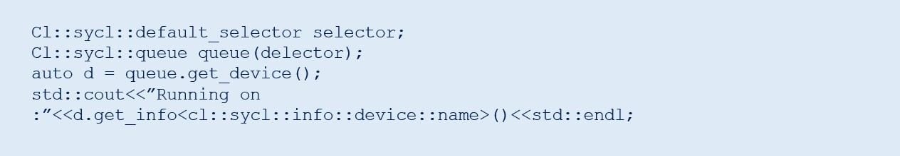

Optimize the Performance of oneAPI Applications
Get the Most from This Unified, Standards-Based Programming Model
Kevin O’Leary, software technical consulting engineer, Intel Corporation
Get the Latest on All Things CODE
Modern workloads are incredibly diverse—and so are processor architectures. No single architecture is best for every workload. Maximizing performance takes a mix of scalar, vector, matrix, and spatial (SVMS) architectures deployed in CPU, GPU, FPGA, and future accelerators. Intel® oneAPI products deliver what you need to deploy your applications across SVMS architectures. This set of complementary toolkits—a base kit and specialty add-ins—simplifies programming and helps you improve efficiency and innovation.
The Intel® oneAPI Base Toolkit (Base Kit) includes advanced analysis and debug tools for profiling, design advice, and debugging:
- Intel® VTune™ Profiler finds performance bottlenecks in CPU, GPU, and FPGA systems.
- Intel® Advisor provides vectorization, threading, and accelerator offload advice.
- Intel® Distribution for GDB* helps efficiently debug code.
Performance Analysis Tools
This article focuses on Intel Advisor and Intel VTune Profiler and the new features they provide as part of the Base Kit.
Intel® Advisor
Use this tool for code modernization, programming guidance, and performance estimation that supports the Data Parallel C++ (DPC++) language on CPUs and GPUs. It provides codesign, performance modeling, analysis, and characterization features for C, C++, Fortran, and mixed Python* applications.
Intel Advisor includes:
- Offload Advisor to help you identify high-impact opportunities to offload to the GPU and areas that aren’t useful to offload. You can also project performance speedup on accelerators, estimate offload overhead, and pinpoint accelerator performance bottlenecks.
- Vectorization Advisor to help you identify high-impact, under-optimized loops and see what's blocking vectorization and where it’s safe to force vectorization.
- Threading Advisor to help you analyze, design, tune, and check threading design options without disrupting your normal development.
- Roofline Analysis to help you visualize performance on both your CPU and GPU and see how close you are to the maximum possible performance.
- Intel® FPGA Add-on for oneAPI Base Toolkit (optional) to help you program these reconfigurable hardware accelerators to speed specialized, data-centric workloads. (Requires installation of the Base Kit.)
Use the Offload Advisor command-line feature to design code for efficient offloading to accelerators—even before you have hardware. Estimate code performance and compare it with data transfer costs. No recompilation is required.
The GPU performance evaluation from Intel Advisor (Figure 1) produces upper-bound speedup estimates using a bounds and bottlenecks performance model. It takes measured x86 CPU metrics and application characterization as input and applies an analytical model to estimate execution time and characteristics on a target GPU.
Figure 1. GPU performance evaluation in Intel Advisor
The Roofline Analysis feature helps you optimize your CPU or GPU code for compute and memory. Locate bottlenecks and determine performance headroom for each loop or kernel to prioritize which optimizations deliver the highest performance payoff.
Note GPU Roofline Analysis is in technical preview.
Intel® VTune™ Profiler
Use this performance analysis tool for serial and multithreaded applications. It helps you analyze algorithm choices and identify where and how your application can benefit from available hardware resources. Use it to locate or determine:
- The most time-consuming (hot) functions in your application and in the whole system
- Sections of code that don’t effectively use available processor resources
- The best sections of code to optimize for both sequential and threaded performance
- Synchronization objects that affect the application performance
- Whether, where, and why your application spends time on input and output operations
- Whether your application is CPU- or GPU-bound and how effectively it offloads code to the GPU
- The performance impact of different synchronization methods, different numbers of threads, or different algorithms
- Thread activity and transitions
- Hardware-related issues in your code such as data sharing, cache misses, branch misprediction, and others
The tool also has new features to support GPU analysis:
- GPU Offload Analysis in Intel VTune Profiler (technical preview)
- GPU Compute and Media Java Hot Spot Performance Engines Analysis (technical preview)
GPU Offload Analysis (Preview)
Use this tool to analyze how code runs on the CPU and GPU cores of your platform, correlate CPU and GPU activity, and identify whether your application is GPU- or CPU-bound. The tool infrastructure automatically aligns clocks across all cores in the system so you can analyze some CPU-based workloads together with GPU-based workloads within a unified time domain. This analysis lets you:
- Identify how effectively your application uses DPC++ or OpenCL™ kernels.
- Analyze the running of Intel® Media SDK tasks over time (for Linux* targets only).
- Explore GPU use and analyze a software queue for GPU engines at each moment of time.
GPU Compute & Media Hot Spots Analysis (Preview)
Use this tool to analyze the most time-consuming GPU kernels, characterize GPU usage based on GPU hardware metrics, identify performance issues caused by memory latency or inefficient kernel algorithms, and analyze GPU instruction frequency for certain instruction types. The GPU Compute and Media Hot Spots analysis allows you to:
- Explore GPU kernels with high GPU use, estimate the use efficiency, and identify possible reasons for stalls or low occupancy.
- Explore your application performance per selected GPU metrics over time.
- Analyze the hottest DPC++ or OpenCL kernels for inefficient kernel code algorithms or incorrect work item configuration.
Case Study: Use Software Tools to Optimize oneAPI Applications
Now that you know some of the tools and features available in the Base Kit, let's work through an example. This case study looks at using Intel VTune Profiler and Intel Advisor to optimize an application. It looks at several Intel Advisor features (including Roofline Analysis and Offload Advisor) to determine the bottlenecks in an application and the regions to offload to an accelerator.
Matrix multiplication is a common operation in many applications. Here’s a sample matrix multiplication kernel:
The algorithm is a triply nested loop with a multiplication and addition in each iteration. Code like this is computationally intensive with many memory accesses. Intel Advisor is ideal for helping you analyze it.
Using Intel Advisor to Help Port to GPU
A feature in Intel Advisor lets you see the portions of the code that can profitably be offloaded to a GPU. It also can predict the code performance when run on the GPU and lets you experiment based on several criteria. Analyzing DPC++ code with Intel Advisor requires a two-stage analysis:
The screenshot in Figure 2 shows the CPU runtime and the predicted time when run on the accelerator (in this case, a GPU). It shows how many regions were offloaded and the net speedup. You can also see what are bounding the offloads. In our case, we are 99% bounded by the last-level cache (LLC) bandwidth.
Figure 2. CPU runtime and predicted GPU runtime
In the Summary section of the report, you can see:
- The original CPU runtime, the predicted runtime on the GPU accelerator, the number of offloaded regions, and the speedup in the Program metrics pane.
- What the offloads are bounded by. In our case, the offloads are 99% bounded by the LLC bandwidth.
- Exact source lines of the top offloaded code regions that benefit from offloading to the GPU. In our case, only one code region is recommended for offload.
- Exact source lines of the Top nonoffloaded code regions that aren’t recommended for offload for various reasons. In our case, the time spent in the loops is too small to be modeled accurately and one of the loops is outside the code region marked for offloading.
Use this information to rewrite the matrix multiplication kernel in DPC++, which is explained in the next section.
Rewrite the Matrix Multiplication Kernel in DPC++
Intel Advisor provides the exact source line of the offloaded region, as shown in Figure 3. The tool also recommends loops that don’t need to be offloaded because their compute time is too small to be modeled accurately or they're outside of a marked region (Figure 4).
Figure 3. Top offloaded region
Figure 4. Top nonoffloaded region
To rewrite the matrix multiplication kernel in DPC++ as shown in the following code sample:
- Select an offload device.
- Declare a device queue.
- Declare some buffers to hold the matrix.
- Submit work to the device queue.
- Run the matrix multiplication in parallel.
Optimize GPU Use with Intel VTune Profiler
Offload Advisor helped port the CPU kernel to a GPU, yet the initial implementation is far from optimal. To see how effectively you're using the GPU, use the GPU offload features of Intel VTune Profiler (Figure 5). GPU offload shows that the application has an elapsed time of 2.017 seconds and GPU utilization is 100%. Matrix multiplication is our hot spot.
Figure 5. GPU offload report
Select the Graphics and Platform tabs to display more details. Intel VTune Profiler shows a synchronized timeline between the CPU and GPU. GPU offload does indicate that our GPU execution units are stalling, as indicated by the dark red bar in the timeline (Figure 6).
Next, to identify the source of our low GPU utilization and stalls, run the GPU Hot Spots report in Intel VTune Profiler. Select the Graphics tab in GPU Hot Spots. A high-level diagram of the architecture appears (Figure 7). Notice that:
- The shared local memory (SLM) cache is unused.
- A total of 159.02 GB/s is moved around.
Let's try two optimization techniques:
- Cache-block the matrix
- Use local memory
Figure 6. The running GPU units are stalling.
Figure 7. Diagram of the architecture before memory optimization
To implement these techniques, break the matrix into tiles and work on them separately in the SLM cache:
The new architecture diagram shows that this is much more efficient (Figure 8). It uses the SLM: 136.35 GB/s for read and 45.45 GB/s for write.
Figure 8. Diagram of the architecture after memory optimization
To see more metrics, select the Platform tab (Figure 9). You can see that the matrix is stored in 1024×1024 global memory, but uses local memory in a 16×16 tile. The elapsed time for our new matrix is 1.22s, a 1.64x improvement.
Figure 9. Platform tab
GPU Roofline in Intel Advisor
To see if the GPU version of the matrix multiplication kernel gets the maximum performance from the hardware, use the new GPU Roofline feature. Intel Advisor can generate a Roofline Model for kernels running on Intel® GPUs. The Roofline Model offers an efficient way to characterize your kernels and visualize how far you are from ideal performance.
The Roofline Model on GPU is a tech preview feature that's not available by default. Here’s a five-step process to enable it:
- First, ensure that you have a DPC++ code that correctly runs on the GPU. You can check which hardware you are running on by doing something like this:

- Since this is a technical preview, enable GPU profiling by setting the following environment variable: export ADVIXE_EXPERIMENTAL=gpu-profiling.
- Next, run the survey with the –enable-gpu-profiling option: advixe-cl -collect survey–enable-gpu-profiling –project-dir –search-dir src:r= — ./myapp param1 param2
- Run the tripcount analysis with the –enable-gpu-profiling option: advixe-cl -collect tripcounts –stacks –flop –enable-gpu-profiling –project-dir –search-dir src:r= — ./myapp param1 param2
- Generate the Roofline Model: advixe-cl –report=roofline –gpu –project-dir –report-output=roofline.html
After the last step runs, the file roofline.html generates. Open it in any browser (Figure 10).
Figure 10. Roofline report
It’s also possible to display different dots based on which memory subsystem is used for the arithmetic intensity computation (Figure 11).

As you can see from the roofline chart in Figure 12, our L3 dot is close to the L3 maximum bandwidth. To get more floating point operations per second (FLOPS), we need to further optimize our cache use. A cache-blocking optimization strategy can make better use of memory and increase performance. The graphics technology interface (GTI—traffic between our GPU, GPU uncore [LLC], and main memory) is far from the GTI roofline, so transfer costs between CPU and GPU do not seem to be an issue.
Conclusion
Intel oneAPI products provide a standard, simplified programming model that can run seamlessly on the scalar, vector, matrix, and spatial architectures deployed in CPUs and accelerators. It gives users the freedom to focus on their code instead of the underlying mechanism that generates the best possible machine instructions.
Learn More
______
You May Also Like
Heterogeneous Programming Using oneAPI
Get started with this core set of tools and libraries for developing high-performance, data-centric applications across diverse architectures.
Get started with this core set of tools and libraries for developing high-performance, data-centric applications across diverse architectures.
Product and Performance Information